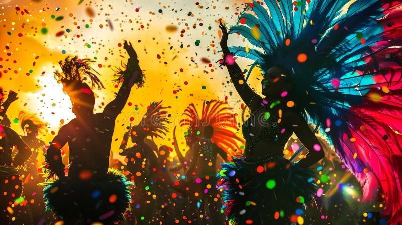
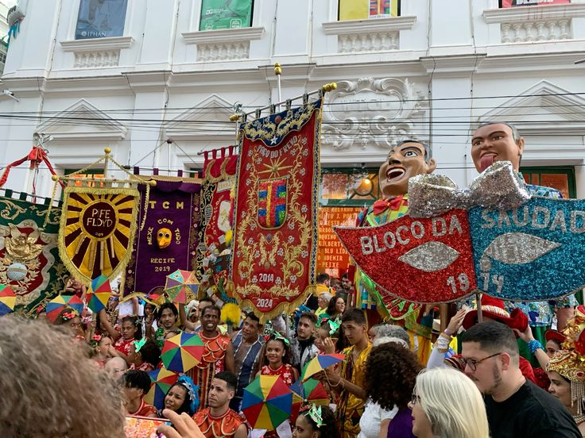

Donga
Compositor ligado ao registro de uma das primeiras gravações de samba de grande repercussão.
Obra: Pelo Telefone (1916).
Raízes africanas, resistência cultural e a maior festa popular do Brasil.
CONHECER AS RAÍZESO samba é um dos gêneros musicais mais representativos da cultura brasileira. Suas raízes estão relacionadas às tradições musicais e às manifestações culturais de povos africanos trazidos à força para o Brasil durante a escravidão.
No Rio de Janeiro, o samba urbano se desenvolveu especialmente entre as comunidades negras, com destaque para a região conhecida como Pequena África, onde viviam muitos descendentes de africanos e baianos.
Espaços de encontro, festas populares, rodas de música e figuras como Tia Ciata tiveram papel fundamental na preservação e no desenvolvimento do samba.
Em 1916, foi registrada a gravação de Pelo Telefone, composição associada a Donga e Mauro de Almeida, considerada um marco na história do samba gravado.
Compositor ligado ao registro de uma das primeiras gravações de samba de grande repercussão.
Obra: Pelo Telefone (1916).
Um dos grandes compositores da história do samba e fundador da Estação Primeira de Mangueira.
Obra: As Rosas Não Falam.
Artista fundamental na valorização das tradições afro-brasileiras e dos cantos populares.
Obra: Marinheiro Só.
Compositor que retratou o cotidiano e a linguagem popular de São Paulo.
Obra: Trem das Onze.
O Carnaval brasileiro tem raízes em festas populares europeias, especialmente o entrudo, uma brincadeira trazida pelos portugueses. Com o tempo, essas celebrações se misturaram às culturas africanas e brasileiras, formando diferentes manifestações carnavalescas.
O samba passou a ter papel central no Carnaval do Rio de Janeiro. No final da década de 1920, surgiram as primeiras escolas de samba, com destaque para a Deixa Falar, fundada em 1928, considerada um marco nesse processo.
As escolas de samba desenvolveram desfiles organizados, com enredos, fantasias, alegorias, baterias e sambas-enredo. Hoje, o Carnaval é uma manifestação cultural que movimenta diferentes regiões do Brasil.


O samba está presente em rodas de samba, blocos carnavalescos, desfiles de escolas de samba e festivais culturais. Sua importância ultrapassa a música: representa memória, ancestralidade, identidade e resistência.